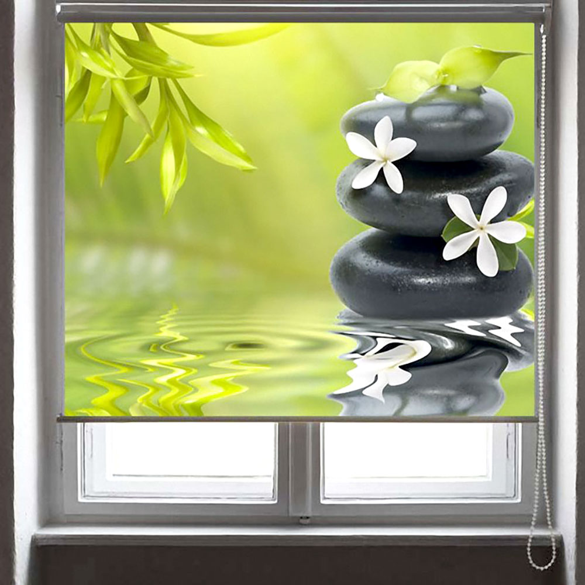

Интеграция рольштор с фотопечатью
Главная | День-ночь | Блэкаут | С фотопечатью | Плиссе | Жалюзи | Римские шторы | Шторы | Карнизы
Современные тенденции в дизайне коммерческих и жилых зон диктуют необходимость отхода от шаблонных решений. Светозащитные конструкции уже не просто выполняют утилитарную функцию, а становятся важным инструментом маркетинга и элементом интерьера. Рольшторы с индивидуальной печатью предлагают уникальный способ персонализации пространства, гармонично объединяя функциональность и визуальную привлекательность.
Особенности технологий и исполнения
Главное достоинство рулонных штор с фотопечатью кроется в применении передовых методов нанесения изображений. УФ-печать обеспечивает исключительную четкость деталей и точность цветопередачи, одновременно гарантируя устойчивость материала к прямому солнечному воздействию. Специальные чернила отличаются высокой износостойкостью и не выгорают, что крайне важно для изделий, работающих в условиях яркого освещения. Широкий ассортимент материалов — от полупрозрачных тканей до плотных светонепроницаемых полотен категории «блэкаут» — дает возможность точно настроить уровень освещенности помещения под любые задачи.
Рольшторы как инструмент корпоративной идентификации

В бизнес-среде рольшторы с фотопечатью выполняют функцию носителя фирменного стиля. Размещение логотипов, слоганов или элементов корпоративной айдентики на оконных проемах позволяет ненавязчиво, но эффективно транслировать ценности бренда как сотрудникам, так и посетителям. В отличие от традиционных рекламных конструкций, такие решения органично вписываются в архитектурный облик офиса, не перегружая пространство. Это оптимальный способ оформления переговорных комнат, клиентских зон и кабинетов, где требуется поддержание строгого делового имиджа при сохранении индивидуальности интерьера.
Эстетическая ценность и дизайнерские возможности
Помимо корпоративного использования, технология фотопечати открывает широкие горизонты для реализации авторских дизайн-проектов. Возможность переноса на ткань репродукций картин, абстрактных паттернов или фотографий высокого разрешения позволяет превратить оконный проем в центральный арт-объект помещения. Такой подход дает возможность визуально корректировать пропорции комнаты, создавать акцентные зоны или поддерживать общую стилистическую концепцию дизайна. В жилых интерьерах это решение позволяет добиться уникальности, недоступной при использовании серийных моделей светозащитных систем.
Экономическая эффективность и долговечность
Инвестиции в качественные рольшторы с фотопечатью оправданы их долговечностью и простотой в обслуживании. Современные полотна проходят специальную антистатическую обработку, что минимизирует оседание пыли и упрощает уход за изделием. В долгосрочной перспективе использование таких систем оказывается более выгодным, чем частая смена декоративных элементов, так как они сохраняют первоначальный вид на протяжении многих лет. Сочетание функциональности защиты от солнца и эстетической привлекательности делает данный продукт востребованным инструментом для создания эргономичной и стильной среды, отвечающей самым высоким стандартам качества.